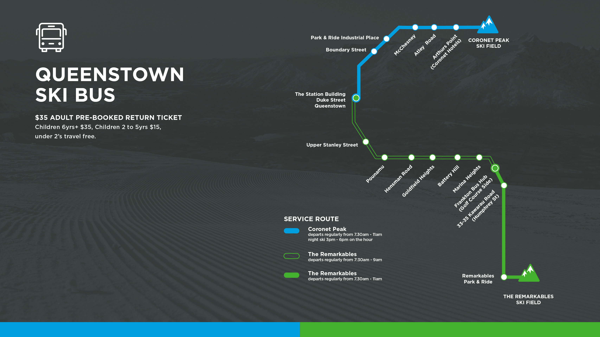
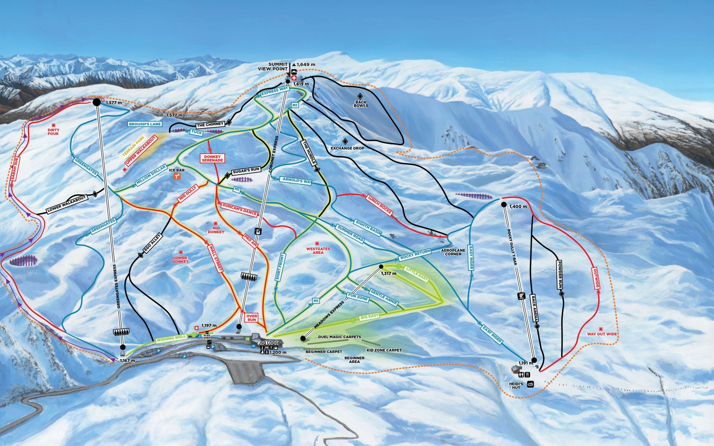
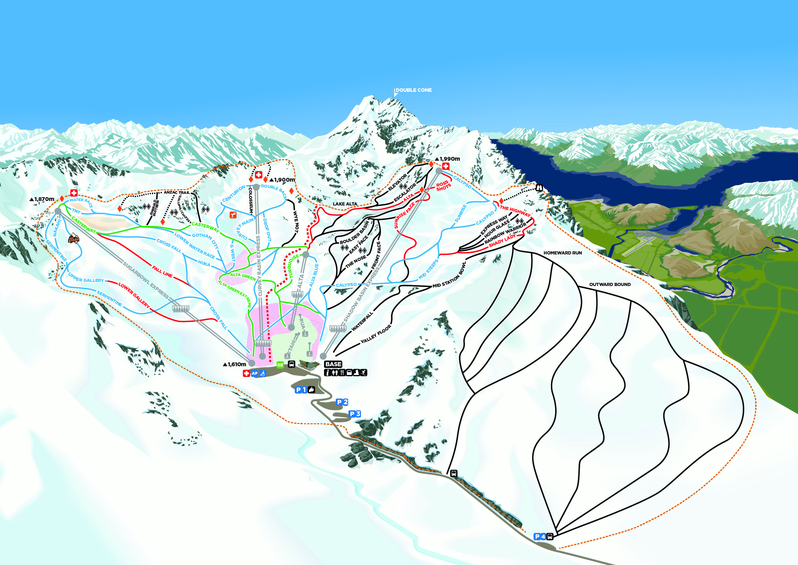
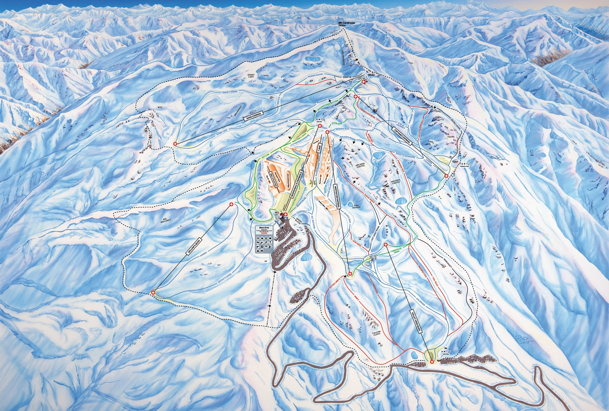
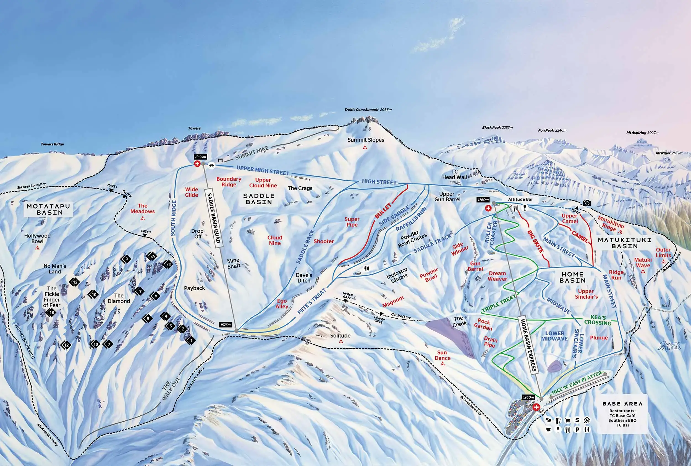

2026 新西兰滑雪旅行攻略

1. 行程结论
- 雪质：皇后镇官方说明 7–8 月通常是雪况最佳的冬季高峰；Cardrona/Treble Cone 也说明 8 月通常是降雪更集中的月份。
- 性价比：深圳往返奥克兰国际机票更便宜，且 8/17–8/21 正好是工作日滑雪。
- 路线效率：奥克兰只作为转机和回程缓冲点，主要时间放在南岛。
- 风险控制：最后一晚住奥克兰机场附近，避免冬季皇后镇航班延误影响国际段。
2. 每日详细行程
| 日期 | 城市/住宿 | 行程安排 | 交通 | 重点开销 |
|---|---|---|---|---|
| 8/15 周六 | 飞机 | 深圳出发飞奥克兰。随身带滑雪服、手套、雪镜、保暖层；雪板/雪鞋可到当地租。 | 国际航班 | 国际机票 F/人 |
| 8/16 周日 | 皇后镇中心区 | 抵达奥克兰后转飞皇后镇。入住后办理 Bee Card，确认雪票、雪具租赁、雪场巴士。 | AKL → ZQN 国内航班 | 约 ¥1,200–1,800/人 |
| 8/17 周一 | 皇后镇中心区 | Coronet Peak 热身滑雪。坡道宽、离皇后镇近，适合作为第一天。 | 雪场巴士 | 约 ¥950–1,150/人 |
| 8/18 周二 | 皇后镇中心区 | The Remarkables 滑雪。景观更开阔，地形公园和中级道体验更好。 | 雪场巴士 | 约 ¥950–1,150/人 |
| 8/19 周三 | 瓦纳卡湖边/镇中心 | 退房前往 Wānaka。途中可停 Arrowtown、Cardrona Hotel。 | SkyDrive 或租车 | 情侣约 ¥250–400/人 |
| 8/20 周四 | 瓦纳卡湖边/镇中心 | Cardrona 滑雪。适合情侣和家庭混合水平，儿童/初学者优先选这里。 | 雪场巴士或租车 | 约 ¥950–1,250/人 |
| 8/21 周五 | 瓦纳卡湖边/镇中心 | Treble Cone 滑雪。中高级体验更强；水平不均则改 Cardrona。 | 雪场巴士或租车 | 约 ¥950–1,250/人 |
| 8/22 周六 | 皇后镇中心区 | 缓冲/休整日。Lake Wānaka、That Wānaka Tree、Mount Iron；下午回皇后镇，可约 Onsen。 | SkyDrive 或租车 | 约 ¥400–800/人 |
| 8/23 周日 | 皇后镇中心区 | Milford Sound 大巴 + 游船一日游；省钱版改 Glenorchy/Arrowtown。 | 一日团 | RealNZ 成人约 NZD 292 ≈ ¥1,136 |
| 8/24 周一 | 奥克兰机场 | 上午 Skyline/湖边/购物；下午或傍晚飞奥克兰，入住机场酒店。 | ZQN → AKL 国内航班 | 国内机票已计 |
| 8/25 周二 | — | 奥克兰飞深圳。建议提前 3 小时到国际航站楼。 | 国际航班 | 国际机票 F/人 |
2.1 Google / 高德地图交通执行表
Google Maps 链接用于实际路线判断和导航；高德地图链接用于中文检索和收藏参考。表内距离/时长按公开地图路网估算，冬季雪场山路、封路、雪链要求和实时交通，以 Google Maps、高德地图、雪场 road status、租车公司要求和当天路况为准。2026-nz-ski-map-layers.kml 可导入 Google My Maps，里面已按每日路线和住宿圈做图层。
| 日期 | 住宿基点 | 当天目的地 | 距离/时长估算 | 推荐交通方式 | Google / 高德 |
|---|---|---|---|---|---|
| 8/16 | Queenstown CBD 住宿圈 | Queenstown Airport → Queenstown CBD | 约 9 km / 15–25 分钟 | 2 人：Orbus/出租车；5 人：出租车 van 或取车后进城。当天重点是入住、采购和确认雪场交通。 | Google 点位 / 高德 |
| 8/17 | Queenstown CBD 住宿圈 | Coronet Peak | 约 18 km / 35–45 分钟单程 | 首选 NZSki Ski Bus；第一天不建议自驾上山，先适应左行、雪具和雪场流程。 | Google 路线 / 高德 |
| 8/18 | Queenstown CBD 住宿圈；5 人可选 Frankton | The Remarkables | CBD 出发约 24 km / 60–75 分钟；Frankton 出发约 17 km / 55–65 分钟 | 2 人继续坐雪场巴士；5 人若自驾，必须按当天 road status、雪链和停车情况决定。Frankton 更顺路但餐饮不如 CBD。 | Google 路线 / 高德 |
| 8/19 | Queenstown CBD → Wānaka 住宿圈 | Arrowtown、Cardrona Hotel、Wānaka | 串联约 76 km / 1.5 小时纯驾驶；含停留按 4–6 小时计划 | 5 人：这天开始租 7 座车最合适；2 人不自驾则坐 SkyDrive 直达 Wānaka，Arrowtown/Cardrona Hotel 需要改成包车或放弃。 | Google 路线 / 高德 |
| 8/20 | Wānaka 湖边/镇中心住宿圈 | Cardrona Alpine Resort | Wānaka 中心约 37 km / 55–65 分钟；Edgewater 约 38 km；Oakridge 约 34 km | 雪场巴士或租车。家庭组优先 Cardrona；若自驾需确认雪链、山路和停车。 | Google 路线 / 高德 |
| 8/21 | Wānaka 湖边/镇中心住宿圈 | Treble Cone | Wānaka 中心约 30 km / 40–50 分钟；Edgewater 约 28 km / 35–45 分钟 | 雪场巴士或租车。Treble Cone 更适合中高级；低能见度、风大或儿童压力大时改 Cardrona。 | Google 路线 / 高德 |
| 8/22 | Wānaka 住宿圈 → Queenstown CBD/Frankton | That Wānaka Tree、Mount Iron、Onsen、Queenstown | 串联约 82 km / 1 小时 40 分钟纯驾驶；含短徒步/泡汤按 4–6 小时 | 5 人自驾最顺；2 人不自驾可上午步行/出租车玩 Wānaka，下午 SkyDrive 回 Queenstown，Onsen 另约接驳/出租车。 | Google 路线 / 高德 |
| 8/23 | Queenstown CBD 住宿圈 | Milford Sound via Te Anau | 单程约 290 km / 4–5 小时；一日团通常 12–13 小时 | 首选大巴 + 游船一日团。冬季不建议游客自驾当天往返，疲劳和山路风险高。 | Google 路线 / 高德 |
| 8/24 | Queenstown CBD → Auckland Airport 住宿圈 | Skyline、Queenstown Airport、Auckland Airport 酒店 | CBD 到 Skyline 下站步行约 10–15 分钟；CBD 到 ZQN 约 9 km / 15–25 分钟；AKL 到机场酒店约 0–3 km | 上午只排轻量活动；下午飞 AKL。Novotel 适合步行到航站楼，Ibis/Heartland/JetPark 需确认接驳或短途出租。 | Google 路线 / 高德 |
2.2 住宿周边配套与选择逻辑
| 住宿圈/酒店组 | 周边配套 | 交通便利性 | 适合人群 | 主要取舍 |
|---|---|---|---|---|
| Queenstown CBD：Holiday Inn Express / Ramada / mi-pad | 餐厅、酒吧、咖啡、湖边步道、便利店、户外/雪具店集中；步行活动半径最好。 | 去 Coronet Peak、The Remarkables 雪场巴士和 Milford Sound 一日团集合最方便；到机场约 9 km。 | 2 人情侣、不自驾、第一次到 Queenstown。 | 房价高、停车贵；房间通常不如公寓宽敞。 |
| Queenstown CBD 北侧：Creeksyde / Hampshire Lakeview | 更靠近超市、Skyline、holiday park 自助厨房/洗衣配套；适合采购和洗烘装备。 | 可步行进镇，但部分路段有坡；去雪场巴士/一日团集合点仍比 Frankton 方便。 | 5 人组合、预算控制、需要厨房和洗衣。 | 舒适度和景观不如湖景酒店；房型要确认独立卫浴和床位。 |
| Frankton / Remarkables Park：Driftaway / Holiday Inn Remarkables Park / Sudima Five Mile | 机场、超市、商圈、加油、停车和补给更方便；Driftaway 有湖边和自助式住宿优势。 | 去 The Remarkables 比 CBD 更顺；去 Queenstown CBD 吃饭/集合需开车或公交。 | 5 人自驾、带孩子、行李多、重视停车。 | 夜生活和餐厅密度不如 CBD；Milford Sound 一日团集合可能不如市中心方便。 |
| Wānaka 镇中心：Wanaka Hotel / Archway / Hampshire Wānaka | 餐厅、咖啡、New World 超市、湖边、药店和滑雪用品店更容易步行解决。 | 去 Cardrona 约 37 km，去 Treble Cone 约 30 km；镇中心适合不想每天开车找饭的人。 | 2 人情侣、预算优先、希望晚上步行吃饭。 | 安静度和湖景弱于 Edgewater；部分 motel/holiday park 房型要确认洗烘。 |
| Wānaka 湖边：Edgewater | 湖边环境好，离 That Wānaka Tree 更近，适合休整、拍照和滑后放松。 | 去 Wānaka 镇中心需步行较久或短途开车/出租；去 Treble Cone 略顺。 | 情侣舒适版、5 人选 2 卧公寓。 | 不如镇中心吃饭方便；旺季湖边房价容易上去。 |
| Wānaka 南侧：Oakridge | 停车、度假设施和家庭公寓更友好，适合自驾和多人。 | 去 Cardrona 方向略顺，但去镇中心吃饭、采购基本需要开车。 | 5 人家庭组、需要大房型和停车。 | 不自驾不推荐；周边步行配套弱。 |
| Auckland Airport：Novotel / Ibis Budget / Heartland / JetPark | 机场餐饮、便利店、租车点和航站楼配套为主；Ibis 周边更偏机场商圈，Heartland/JetPark 更依赖接驳。 | Novotel 最适合早班机步行；Ibis/Heartland/JetPark 需看酒店接驳时间或短途出租。 | 回程前一晚所有人。 | 只为过夜和防误机，不建议安排奥克兰市区观光。 |
3. 官方地图、雪道图与目的地特点
地图使用说明
- 本文档优先使用官方雪场/交通地图资源，不再使用普通风景照做介绍。
- 雪道图用于提前理解雪场结构；真正执行时，以雪场官网、App、当天 snow report、lift status 和 road status 为准。
- The Remarkables 与 Treble Cone 的当前官网资源中仍有旧年份文件名；文档会如实标注，不把旧图误写成 2026。
南岛动线与小交通地图
| 路段 | 用途 | 推荐方式 | 判断 |
|---|---|---|---|
| Auckland Airport ↔ Queenstown Airport | 国际转南岛 | 国内航班 | 滑雪重点在南岛，不建议长途陆路折腾 |
| Queenstown ↔ Coronet Peak | 第 1 个滑雪日 | NZSki Ski Bus | 距离近，适合热身日 |
| Queenstown ↔ The Remarkables | 第 2 个滑雪日 | NZSki Ski Bus | 山路天气影响更明显，不熟悉冬季山路不建议自驾 |
| Queenstown ↔ Wānaka | 换城与观光 | 2 人坐 SkyDrive；5 人租 7 座车 | 5 人带行李时租车优势明显 |
| Wānaka ↔ Cardrona/Treble Cone | 第 3–4 个滑雪日 | 雪场巴士或租车到山脚接驳 | 以当天道路、雪链和风速为准 |
Coronet Peak：热身、夜滑、交通最省心

- 目的地特点：离 Queenstown 最近，地形集中，雪道节奏快，初中级都容易找到合适区域。
- 适合人群：第一次到新西兰滑雪、需要适应雪具/雪质/雪场动线的人；也适合情侣和家庭混合水平。
- 执行建议：8/17 安排这里最稳；第一趟先检查雪鞋、固定器、板刃和头盔，不急着冲高难道。
The Remarkables：景观强、地形公园和中级体验更突出

assets/official-maps/remarkables-trail-map-2025.pdf。来源：The Remarkables 官网 Plan 页面。- 目的地特点：高山感更强，景观比 Coronet Peak 更开阔，地形公园、蓝道和拍照体验更突出。
- 适合人群：已经热身过、希望滑得更有变化的中级滑雪者；也适合想兼顾滑雪和拍照的情侣。
- 执行建议：8/18 安排这里；若当天能见度差或风大，优先压缩停留时间，不硬上高处区域。
Cardrona：家庭友好、宽道多、最适合混合水平团队

- 目的地特点：宽道多、节奏相对温和，教学、租赁、餐饮和公园配套成熟。
- 适合人群：情侣中一人进阶一人保守、5 人组合中的儿童或初学者、希望滑得扎实而非追求高难地形的人。
- 执行建议：8/20 固定安排 Cardrona；如果 8/21 天气差或团队疲劳，直接把第二天也改成 Cardrona。
Treble Cone：中高级优先、风景强，但容错更低

- 目的地特点：更偏中高级，坡道更有山地感，Lake Wānaka 视野强。
- 适合人群：能稳定滑蓝道/红道，想要更长坡道和更强山地感的人；情侣双方水平接近时体验更完整。
- 不建议人群：第一次滑雪、刚入门、对山路/风/能见度容错低的家庭组。
- 执行建议：8/21 作为“条件满足才执行”的滑雪日；天气差就改 Cardrona，不为打卡牺牲安全和体验。
非滑雪目的地特点
| 目的地 | 角色 | 适合安排 | 取舍建议 |
|---|---|---|---|
| Auckland | 国际转机和回程缓冲 | 8/16 转机、8/24 机场过夜 | 不建议占用南岛滑雪时间 |
| Queenstown | 主基地、餐饮、一日游集合点 | 8/16–8/19、8/22–8/24 | 住宿贵，但交通和活动效率最高 |
| Wānaka | Cardrona/Treble Cone 基地 | 8/19–8/22 | 更安静，适合公寓、做饭、洗烘装备 |
| Arrowtown | 换城日短停 | 8/19 中途 45–90 分钟 | 顺路即可，不单独占一天 |
| Cardrona Hotel | 换城日拍照/午餐点 | 8/19 中途 45–75 分钟 | 5 人租车更适合停留 |
| Milford Sound | 南岛核心观光 | 8/23 一日团 | 风景回报高，但费用和时间成本也高 |
| Glenorchy | 低成本观光替代 | 8/23 预算版 | 比 Milford Sound 轻松，适合天气不稳时替代 |
4. 住宿建议：按每日活动匹配
住宿不是按城市机械切换，而是按第二天集合点、雪场通勤、洗烘装备、停车和退房压力来选。下表价格为 2026-06-25 可公开读取的“from/近期价/均价”口径，不能替代 2026-08-15 至 08-25 下单页实时报价；滑雪季和周末建议预留 20%–40% 浮动。
每日住宿执行表
| 日期 | 当天活动 | 当晚住宿位置 | 2 人情侣推荐 | 5 人组合推荐 | 为什么这样住 | 公开价格参考 |
|---|---|---|---|---|---|---|
| 8/15 周六 | 深圳出发，夜间飞行 | 飞机上 | 不订住宿 | 不订住宿 | 把预算留给南岛，不建议在奥克兰多住一晚 | — |
| 8/16 周日 | AKL 转机到 ZQN；办理交通卡、雪票、雪具 | 皇后镇中心区 | Holiday Inn Express 或 Ramada Queenstown Central；预算优先选 mi-pad | 两间中心区酒店；或 Hampshire Lakeview / Creeksyde 这类 holiday park 单元 | 第二天去 Coronet Peak，住中心区方便雪场巴士、晚餐和采购；到达日不要住太偏 | mi-pad US$83≈¥565；Ramada US$131–166≈¥892–1,130；Holiday Inn Express US$151–159≈¥1,028–1,083 |
| 8/17 周一 | Coronet Peak 热身滑雪 | 皇后镇中心区 | 继续住同一酒店 | 继续住同一住宿，避免搬行李 | 第一滑雪日结束后需要调整雪具、买缺失装备；同住一处更稳 | 同 8/16；Holiday Inn Express 停车约 NZD25/天≈¥96 |
| 8/18 周二 | The Remarkables 滑雪 | 皇后镇中心区 | 继续住同一酒店 | 继续住同一住宿 | The Remarkables 山路天气影响更明显，住中心区便于坐官方雪场巴士；晚上餐饮选择最多 | 同 8/16 |
| 8/19 周三 | 换城：Arrowtown、Cardrona Hotel、抵达 Wānaka | Wānaka 湖边/镇中心 | Wanaka Hotel / Archway / Edgewater；想拍照和休整选 Edgewater | Edgewater 2 卧公寓、Oakridge Family Apartment、Hampshire Wānaka cabin/unit | 当天不滑雪，适合中途观光；住 Wānaka 是为了接下来两天减少去 Cardrona/Treble Cone 的通勤 | Wanaka Hotel 约US$96起≈¥654；Archway US$92起≈¥627；Edgewater US$122起≈¥831；Oakridge 均价 from US$274≈¥1,866 |
| 8/20 周四 | Cardrona 滑雪 | Wānaka 湖边/镇中心 | 继续住 Wānaka，优先带洗衣/烘干条件 | 继续住公寓/holiday park，晚上做饭、烘装备 | Cardrona 是 Wānaka 段最稳的一天；滑后需要洗烘内层、手套、袜子 | Wānaka 8 月均价约 US$189/晚≈¥1,287；Hampshire Wānaka 平均 from US$94≈¥640 |
| 8/21 周五 | Treble Cone；天气差则改 Cardrona | Wānaka 湖边/镇中心 | 继续住 Wānaka | 继续住 Wānaka | Treble Cone 更吃天气和水平；住 Wānaka 方便临时改 Cardrona，不需要跨城折返 | 同 8/19–8/20 |
| 8/22 周六 | Wānaka 休整 + 返回 Queenstown；可约 Onsen | 皇后镇中心区或 Frankton | 不自驾选 Ramada / Holiday Inn Express / mi-pad；自驾可选 Frankton | 有车选 Driftaway / Hampshire Lakeview / Creeksyde；想舒适选公寓型酒店 | 次日 Milford Sound 一日游通常从 Queenstown 出发，必须回皇后镇住；当天晚归也要方便吃饭 | Driftaway US$93–121≈¥633–824；Hampshire Lakeview US$98–112≈¥667–763；Creeksyde US$112起≈¥763 |
| 8/23 周日 | Milford Sound 大巴 + 游船一日游 | 皇后镇中心区 | 继续住中心区酒店 | 继续住同一住宿 | 一日游早出晚归，住中心区减少集合和晚餐压力；不建议当天换酒店 | Queenstown 8 月均价约 US$214/晚≈¥1,458 |
| 8/24 周一 | Skyline/湖边/购物；ZQN 飞 AKL | 奥克兰机场 | Heartland / Ibis Budget / Novotel Auckland Airport | 两间 Heartland / JetPark / Ibis；最省心选 Novotel 两间 | 回程国际段风险最高，最后一晚必须住机场附近；早班机优先 Novotel，预算优先 Ibis/Heartland | Ibis US$74–75≈¥504–511；Heartland US$81–103≈¥552–701；Novotel US$124–127≈¥845–865 |
| 8/25 周二 | 奥克兰飞深圳 | — | — | — | 提前 3 小时到国际航站楼 | — |
分城市预订建议
| 城市 | 2 人情侣首选 | 5 人组合首选 | 关键设施 | 适合对应日期 |
|---|---|---|---|---|
| 皇后镇中心区 | Ramada Queenstown Central、Holiday Inn Express、mi-pad | 两间 Ramada/Holiday Inn Express；或 Creeksyde / Hampshire Lakeview | 步行吃饭、雪场巴士、洗衣、行李寄存 | 8/16–8/19、8/22–8/24 |
| Queenstown Frankton | Holiday Inn Remarkables Park、Sudima Five Mile | Driftaway、Frankton/Remarkables Park 公寓 | 停车、超市、机场近、去 The Remarkables 顺路 | 5 人自驾组可替代中心区 |
| Wānaka | Wanaka Hotel、Archway、Edgewater | Edgewater 2 卧公寓、Oakridge Family Apartment、Hampshire Wānaka | 厨房、洗衣/烘干、停车、滑雪装备存放 | 8/19–8/22 |
| Auckland Airport | Ibis Budget、Heartland、Novotel | 两间 Heartland/JetPark/Ibis；预算足选 Novotel | 机场接驳/步行、24 小时前台、早班机便利 | 8/24–8/25 |
2 人情侣住宿组合
| 档位 | Queenstown 5 晚 | Wānaka 3 晚 | Auckland Airport 1 晚 | 9 晚房费估算 |
|---|---|---|---|---|
| 控预算 | mi-pad / Haka House 私享房 | Wanaka Hotel / Haka House | Ibis Budget | ¥5,300–7,500/间 |
| 性价比推荐 | Ramada / Holiday Inn Express | Wanaka Hotel / Archway / Edgewater 普通房 | Heartland / Ibis | ¥8,500–12,000/间 |
| 舒适版 | Holiday Inn Express / Crowne Plaza | Edgewater 湖边房或套房 | Novotel Auckland Airport | ¥12,000–17,000/间 |
情侣选择建议：如果不自驾，皇后镇优先中心区，Wānaka 优先镇中心或湖边；不要为了每晚省 ¥200–300 住得过偏，否则雪场巴士、晚餐和行李转移会损耗体验。
5 人组合住宿组合
| 档位 | Queenstown 5 晚 | Wānaka 3 晚 | Auckland Airport 1 晚 | 9 晚团队房费估算 |
|---|---|---|---|---|
| 控预算 | Holiday park 两个单元 / 两间经济酒店 | Hampshire Wānaka / 带厨房 cabin | 两间 Ibis/Heartland | ¥11,500–16,000/组 |
| 性价比推荐 | Creeksyde / Hampshire Lakeview / Driftaway | Edgewater 或 Oakridge 家庭公寓 | 两间 Heartland/JetPark | ¥15,000–25,000/组 |
| 舒适版 | Queenstown 公寓型酒店 / 两间 4 星酒店 | Edgewater 2 卧公寓 | 两间 Novotel | ¥25,000+/组 |
5 人选择建议：优先订带厨房、洗衣、烘干和停车的 apartment 或 holiday park unit。滑雪服、保暖层、手套和袜子每天都要烘干；对家庭组来说，洗烘和厨房通常比湖景更重要。
5. 新西兰小交通
- AKL ↔ ZQN：建议买含托运行李票；奥克兰机场国际/国内航站楼有免费接驳巴士。
- 皇后镇市内：购买 Bee Card，Queenstown Orbus 成人 Bee Card 票价为 NZD 2.50/次。
- Queenstown ↔ Wānaka：情侣推荐 SkyDrive/Ritchies shuttle，约 NZD 42.50/人/程。
- 雪场交通：Coronet Peak 和 The Remarkables 建议雪场巴士；Cardrona/Treble Cone 按天气决定巴士或租车。
- 5 人租车：建议 7 座车，不建议 5 座 SUV；雪场山路当天看道路和雪链要求。
6. 预算总览
2 人情侣
| 项目 | 人均预算 | 2 人合计 |
|---|---|---|
| 签证 | ¥1,715 | ¥3,430 |
| 深圳 ↔ 奥克兰国际机票 | F | 2F |
| 奥克兰 ↔ 皇后镇国内机票 | ¥1,200–1,800 | ¥2,400–3,600 |
| 住宿 9 晚 | ¥4,200–6,700 | ¥8,400–13,400 |
| 4 天滑雪 | ¥4,400–4,900 | ¥8,800–9,800 |
| 餐饮 | ¥2,300–3,500 | ¥4,600–7,000 |
| 小交通 | ¥700–1,000 | ¥1,400–2,000 |
| 观光 | ¥1,100–1,900 | ¥2,200–3,800 |
| 保险/杂费 | ¥800–1,200 | ¥1,600–2,400 |
| 合计，不含国际机票 | ¥16,500–22,000 | ¥33,000–44,000 |
| 合计，含国际机票 | ¥16,500–22,000 + F | ¥33,000–44,000 + 2F |
5 人组合
| 项目 | 团队预算 | 说明 |
|---|---|---|
| 签证 | ¥8,575 | 5 人各 NZD 441 粗算 |
| 深圳 ↔ 奥克兰国际机票 | 5F | 按实际票价填入 |
| 奥克兰 ↔ 皇后镇国内机票 | ¥6,000–9,000 | 5 人，含托运行李更稳 |
| 住宿 9 晚 | ¥15,000–26,500 | 2 房公寓/holiday park unit/两间房 |
| 南岛小交通 | ¥7,400–11,300 | 7 座车 + 燃油/停车/雪链 + 部分雪场巴士 |
| 4 天滑雪 | ¥18,500–21,500 | 儿童价格以最终预订页为准 |
| 餐饮 | ¥9,000–13,200 | 可通过公寓做饭降低 |
| 观光 | ¥5,200–7,000 | Milford Sound 为主要大项 |
| 保险/杂费 | ¥2,500–5,000 | 保险需覆盖滑雪 |
| 合计，不含国际机票 | ¥72,000–102,000 | |
| 合计，含国际机票 | ¥72,000–102,000 + 5F |
7. 预订清单
第一优先级
- 确认护照有效期和新西兰 Visitor Visa。
- 锁定深圳 ↔ 奥克兰国际机票价格。
- 购买 AKL ↔ ZQN 国内机票，优先选择同一航空公司或足够转机时间。
- 订可取消住宿：Queenstown 8/16–8/19、Wānaka 8/19–8/22、Queenstown 8/22–8/24、Auckland Airport 8/24–8/25。
第二优先级
- NZSki 购买 2 天 Superpass，用于 Coronet Peak + The Remarkables。
- Cardrona/Treble Cone 购买 2 天 multi-day pass 或 lift + rental combo。
- 预订雪场巴士或确认租车雪链政策。
- 预订 Milford Sound 一日团。
- 预订旅行保险，必须覆盖滑雪/雪板运动、医疗、航班延误和行李。
出发前 24 小时内
- 填写 New Zealand Traveller Declaration，每位旅客包括儿童都需要提交。
- 查看四个雪场 snow report 和道路状态。
- 根据天气决定是否将 Treble Cone 改为 Cardrona，或把 8/22 用作补滑日。
8. 装备建议
建议自带
- 滑雪服/冲锋衣、雪裤、手套或连指手套、雪镜。
- 速干内衣、保暖中层、羊毛袜/滑雪袜、护脸、脖套。
- 防晒霜、润唇膏、护臀、护膝、护腕。
可当地租
- 雪板/双板、雪鞋、头盔、雪杖。
不建议现场临时买
合脚滑雪袜、贴身保暖层、舒适手套和护具。雪场和镇上可以买到，但价格高、尺码不稳定，临时购买会浪费第一天滑雪时间。
9. 常见 Q&A
Q1：为什么不直接住皇后镇全程？
可以，但会牺牲性价比和通勤体验。Cardrona 和 Treble Cone 更靠近瓦纳卡；住瓦纳卡 3 晚能减少往返时间，也能体验更安静的湖区。
Q2：Treble Cone 是否适合儿童或初学者？
不作为首选。Treble Cone 更适合中高级；如果团队水平不均，8/21 可以改为 Cardrona 第二天。
Q3：2 人情侣是否需要租车？
不建议。皇后镇停车、雪场山路、雪链和冬季天气都会增加成本和风险。2 人用公交、SkyDrive 和雪场巴士更省心。
Q4：5 人一定要租车吗？
不是一定，但推荐 8/19–8/24 租 7 座车。它主要解决换城、行李、观光和家庭灵活性；雪场上山当天仍可根据天气改坐雪场巴士。
Q5：如果天气不好怎么办？
8/22 和 8/24 上午都留有缓冲。每天早上看 snow report，风大或道路差时优先改 Cardrona、Coronet Peak 或镇区活动。
Q6：要不要买 5 天雪票？
不建议一开始买死 5 天。先按 4 天滑雪规划，8/22 作为补滑/休息；状态好再补第 5 天。
Q7：是否需要滑雪课程？
如果是初学者，建议第一天在 Coronet Peak 或 Cardrona 买课程包。不要让会滑的人直接带零基础新手上中级道，效率低且容易受伤。
Q8：国际段和新西兰国内段能否当天衔接？
到达日可以，但要留足入境、取行李、重新托运和换航站楼时间。回程不建议当天从皇后镇飞奥克兰接国际航班，所以安排 8/24 住奥克兰机场。
Q9：新西兰签证要提前多久办？
建议至少提前 2–3 个月开始。INZ 显示 Visitor Visa 费用从 NZD 441 起，且需要资金证明、离境证明等材料。
Q10：旅行保险怎么选？
必须覆盖滑雪/单板运动、医疗救援、航班延误、行李延误和取消损失。注意有些保险把滑雪列为高风险运动，需要额外购买运动保障。
10. 备选方案
省钱版
- Milford Sound 改为 Glenorchy + Arrowtown。
- 皇后镇住宿改 Haka House 私享房或 holiday park cabin。
- 瓦纳卡住 holiday park cabin 或公寓做饭。
- 滑雪控制在 4 天，不加夜滑。
舒适版
- 皇后镇住中心区 4 星酒店。
- 瓦纳卡住 Edgewater 湖景房或 2 房公寓。
- 8/22 安排 Onsen Hot Pools。
- 8/23 Milford Sound 选择含更舒适座位或小团产品。
滑雪强化版
- 8/22 改为 Cardrona 第三天。
- Milford Sound 取消或改为更短的 Glenorchy。
- 前提是团队体力好，且天气稳定。
11. 官方地图来源与使用说明
本文档的地图和雪道图优先使用官方雪场/交通页面资源，并以本地文件形式保存在 assets/official-maps/ 下。地图仅用于个人行程规划；外部公开分享或商业使用前，应再次核对各雪场官网的版权和使用条款。出发前请重新打开官方页面确认是否已更新为 2026 最新版本。
| 本地文件 | 内容 | 官方来源 |
|---|---|---|
| nzski-queenstown-transport-map.jpg | NZSki Queenstown 雪场交通地图 | The Remarkables 官方 Plan 页面 / NZSki 媒体资源 |
| coronet-peak-trail-map-2026.jpeg | Coronet Peak 2026 雪道图 | Coronet Peak Mountain Info |
| remarkables-trail-map-2025.jpg | The Remarkables 当前官网引用雪道图图片 | The Remarkables Plan |
| remarkables-trail-map-2025.pdf | The Remarkables 当前官网引用雪道图 PDF | The Remarkables Plan |
| cardrona-trail-map-w26.webp | Cardrona W26 雪道图 | Cardrona & Treble Cone Maps |
| treble-cone-trail-map-w24.webp | Treble Cone 当前官网引用雪道图 | Cardrona & Treble Cone Maps |
12. 主要来源
- Queenstown 官方滑雪信息
- Queenstown 雪况与预报
- Coronet Peak Mountain Info / Trail Map
- The Remarkables Plan / Trail Map
- Coronet Peak / NZSki Superpass
- Coronet Peak 租赁
- Cardrona & Treble Cone 官方 Maps
- Cardrona & Treble Cone 雪票
- Cardrona & Treble Cone 交通
- Orbus Queenstown 票价
- SkyDrive Queenstown–Wānaka shuttle
- Trip.com Queenstown 酒店价格与 8 月均价
- Trivago Queenstown 住宿比价
- Trip.com Wānaka 酒店价格与 8 月均价
- Trip.com Auckland Airport 周边酒店价格
- Holiday Inn Express & Suites Queenstown 官方酒店信息
- Immigration New Zealand Visitor Visa
- New Zealand Traveller Declaration
- RealNZ Milford Sound Day Trip
- Wise USD/CNY 汇率
- Wise NZD/CNY 汇率